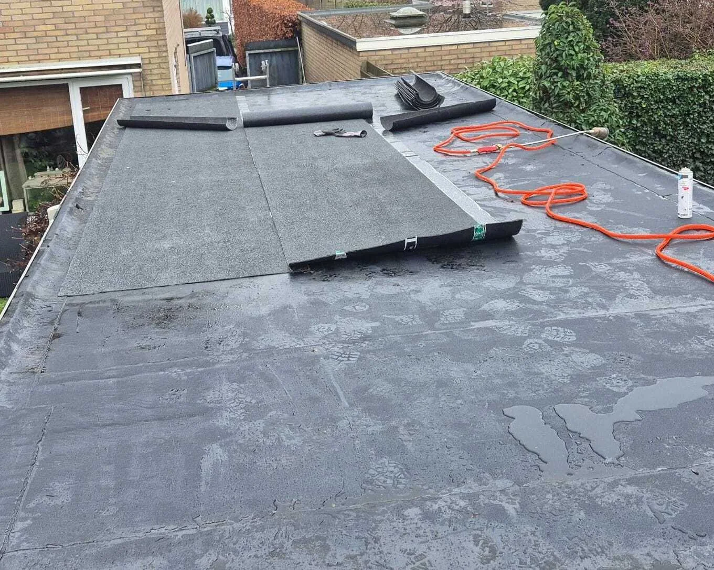
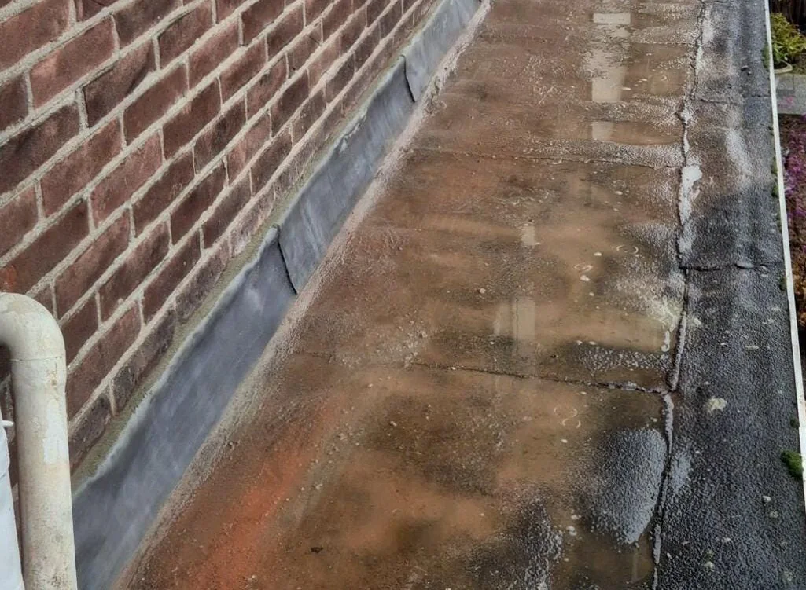
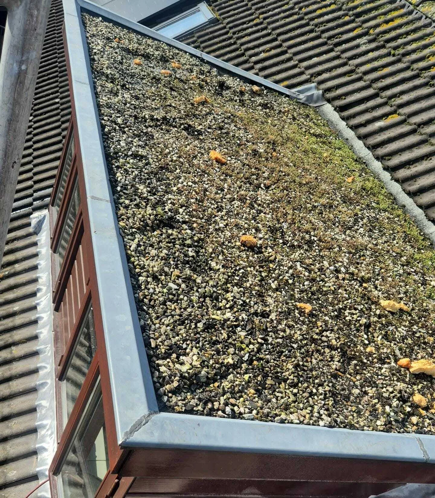
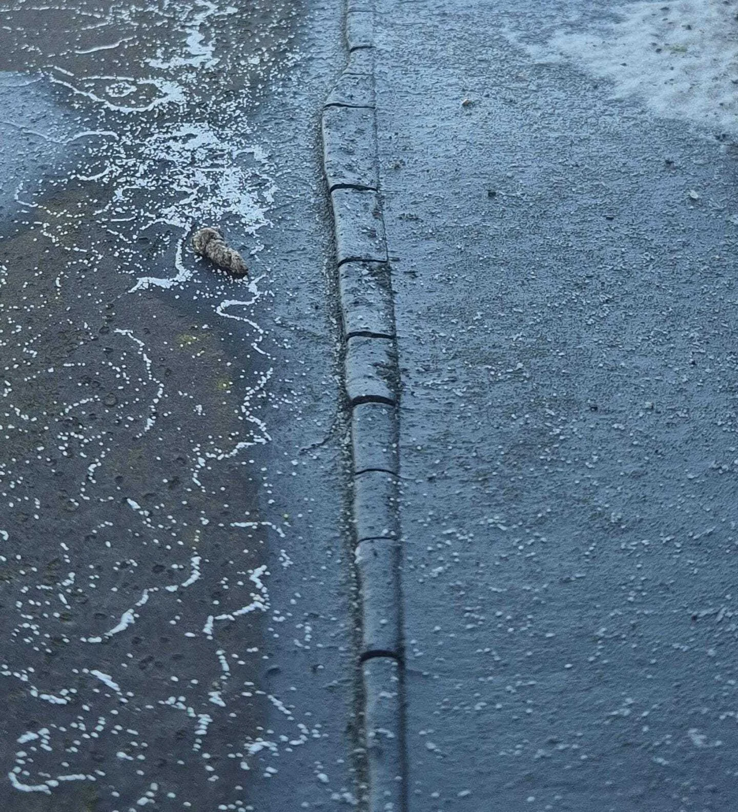

Cluster 12
Plat dak
Een thematische kennisbanksectie met een pillarpagina en ondersteunende artikelen. Begin bij de hoofdpagina voor overzicht, of kies direct het specifieke onderwerp dat past bij uw situatie.

Artikelen in dit cluster
De pillar pagina geeft het overzicht. De ondersteunende blogs behandelen deelvragen, signalen, kosten, risico's en praktische keuzes.
 Afvoeren en waterafvoer op een plat dakOndersteunende blog
Afvoeren en waterafvoer op een plat dakOndersteunende blog
 Bitumen dak repareren: mogelijkheden en beperkingenOndersteunende blog
Bitumen dak repareren: mogelijkheden en beperkingenOndersteunende blog

Bitumen over bitumen aanbrengen: wanneer kan dat wel en wanneer niet?Ondersteunende blog
Bitumen vs EPDM: welke dakbedekking is beter voor een plat dak?Ondersteunende blog Blaasvorming in bitumen dakbedekking: hoe ontstaat het?Ondersteunende blog
Blaasvorming in bitumen dakbedekking: hoe ontstaat het?Ondersteunende blog
 Hoe lang gaat een plat dak met bitumen mee?Ondersteunende blog
Hoe lang gaat een plat dak met bitumen mee?Ondersteunende blog
 Kosten reparatie plat dak met bitumenOndersteunende blog
Kosten reparatie plat dak met bitumenOndersteunende blog
 Lekkage bij een plat dak met bitumen: oorzaken en oplossingenOndersteunende blog
Lekkage bij een plat dak met bitumen: oorzaken en oplossingenOndersteunende blog

Onderhoud van een plat dak: zo verleng je de levensduur van bitumenOndersteunende blog Plat dak inspecteren: waar moet je op letten?Ondersteunende blog
Plat dak met bitumen: opbouw, levensduur en wat er in de praktijk misgaatPillar pagina
Plat dak inspecteren: waar moet je op letten?Ondersteunende blog
Plat dak met bitumen: opbouw, levensduur en wat er in de praktijk misgaatPillar pagina
 Plat dak met bitumen: wanneer is renovatie nodig?Ondersteunende blog
Plat dak met bitumen: wanneer is renovatie nodig?Ondersteunende blog

Scheuren in een bitumen dak: wanneer is reparatie nog mogelijk?Ondersteunende blog